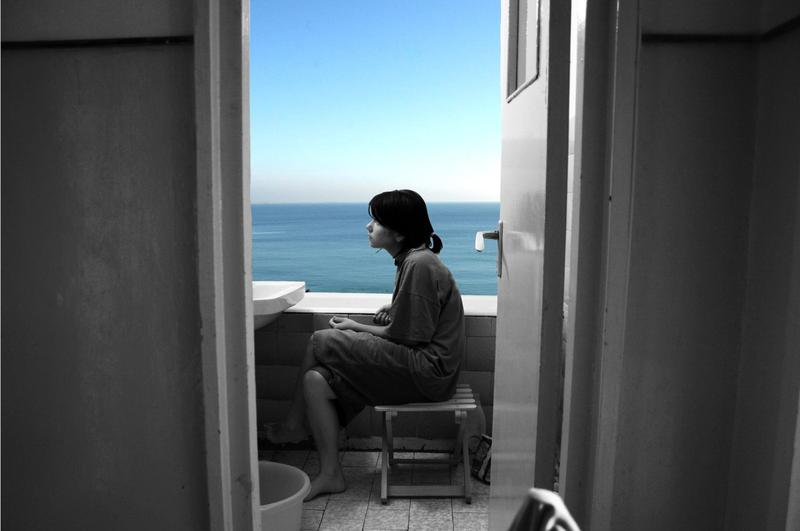
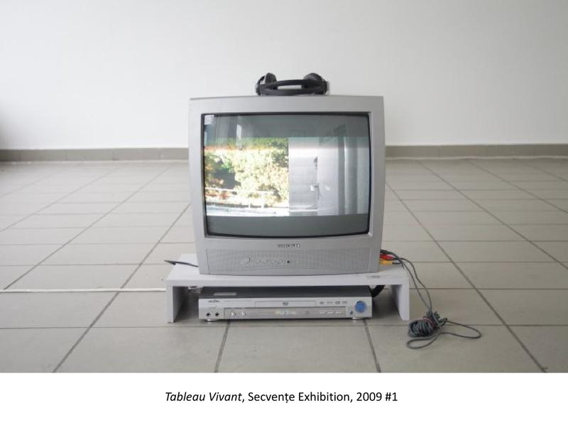
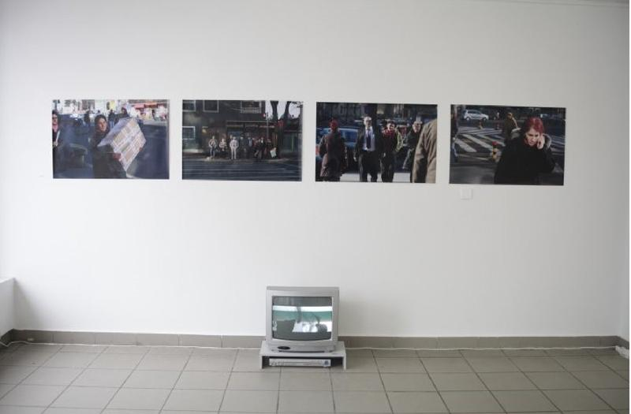
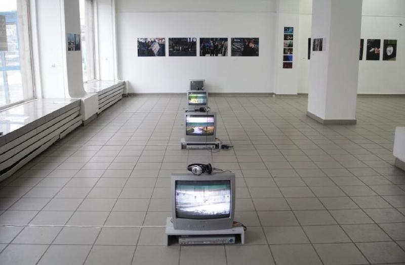

In Tableau Vivant (2009), a bathroom door stands open, and inside its frame the ocean takes the place of a wall. Sea and sky are the only colour in the picture, and they are offered to you, not to me. I sit on a low stool beside a basin and a bucket, in profile, and I look against the photograph: across the view and out of it, towards the dark edge of the door. Everything in the image opens outward, and I am the one thing that does not follow. A tableau vivant is a living picture, a person holding still inside a frame until they become an image, breathing without showing it. Here the doors make the stage and the pose is held. Only the direction of my look refuses the composition, as if the picture were complete and I had not agreed to it. The other images are views of the exhibition Secvențe (2009), where screens on the floor did the opposite and let pictures move.



